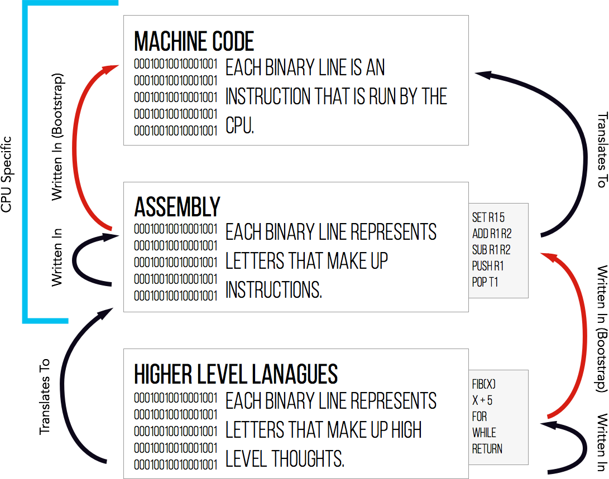
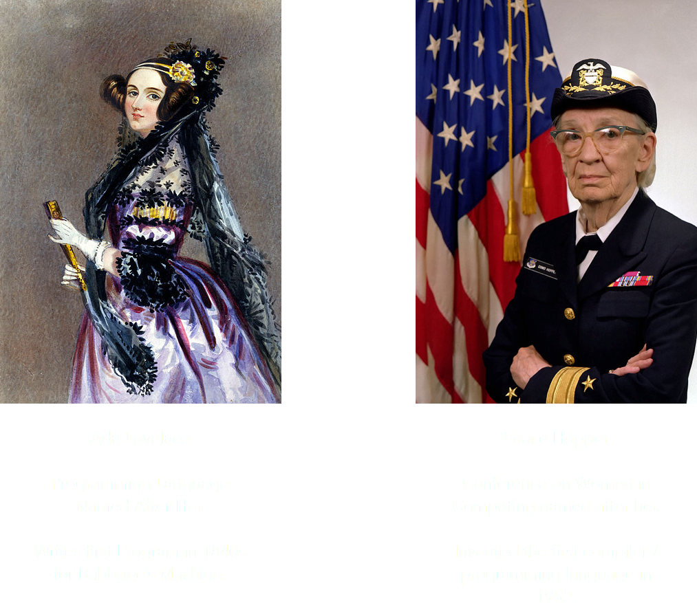

# x is input
0: x = x - 2
1: if x > 0: goto 0
2: y = 1
3: if x == 0: goto 5
4: y = 0
5: halt
In order to run this program, we had to translate the instructions into the binary that the processor actually recognized.
#: _A_ _B_ _Z_ _OP _J_
0: 001 000 010 000 000
1: 000 001 000 010 000
2: 000 111 000 000 010
3: 010 000 001 000 000
4: 000 111 110 000 001
5: 010 000 000 000 000
6: 111 111 111 111 111
#: _A_ _B_ _Z_ _OP _J_
0: 001 000 010 000 000 <- set r1 2 (z = 2)
1: 000 001 000 010 000 <- sub r0 r1 r0 (x = x - z)
2: 000 111 000 000 010 <- jgt r0 r7 0 (if x > 0: goto 0)
3: 010 000 001 000 000 <- set r2 1 (y = 1)
4: 000 111 110 000 001 <- je r0 r7 6 (if x == 0: goto 6)
5: 010 000 000 000 000 <- set r2 0 (y = 0)
6: 111 111 111 111 111 <- halt (halt)
One instruction refers to one line in machine code. Note the addition of the first line which was not present in the original program.
\( a(p_t) = p_b \)
We want to build a program that assembles (or compiles) a subset of the langauge, then use that to write the full compiler.

When programmers used either Machine Code (binary) or Assembly, they were working with the assumption that each statement they wrote would be used to represent a single instruction.
Pros: Programmers can write programs significantly easier.
Cons: It is much more difficult to reason about program speed.
public class IsEven {
public static bool isEven(int x) {
while (x > 0)
x -= 2;
if (x < 0)
return false;
return true;
}
}
def isEven(x):
while x < 0:
x -= 2
if (x < 0):
return False
return True
isEven :: int -> bool
isEven x = isEven (x - 2)
isEven 0 = true
isEven -1 = false
Programming was invented because of women in computing.
Let's build a programming language!
Types of expressions:
def id(arg0, arg1, ... argN) = Eint, idif E1 = E2 then E3 else E4E1 + E2E1 - E2id(E1, ... EN)
def fib(x) = if x = 1 then 0 else
if x = 2 then 1 else
fib(x - 1) + fib(x - 2)
We want a recursive function \( cgen(e) = c \) which takes in an expression (program) \( e \) and returns assembly \( c \).
It will generate code that always puts the answer in register r1, and we allow it to use the other 7 registers (t1, ... t6) as temporary registers.
cgen(e1 + e2) =
cgen(e1) ;; put the result in r1
cgen(e2) ;; put the result in r1?
add r1 <- ?
cgen(e1 + e2) =
cgen(e1)
push r1 ;; put the answer in memory
cgen(e2)
pop t1 ;; get the answer from memory
add r1 <- t1 r1
cgen(if e1 = e2 then e3 else e4) =
cgen(e1)
push r1
cgen(e2)
pop t1
beq r1 t1 true_branch
cgen(e4)
jmp end_if
true_branch:
cgen(e3)
end_if:
cgen(id(arg0, ... argN) = E) =
id:
arguments come from... somewhere
cgen(E)
result goes... somewhere
cgen(id(arg0, ... argN)) =
cgen(arg0)
cgen(arg1)
...
cgen(argN)
put arguments somewhere?
jmp id
We get to choose these things because it is our language!
We talked about the construction of transistors as electrical switches. We used those to build logic gates for boolean algebra. We added in state by creating feedback of logic gates, and suddenly we could store memory and count. Next, we built a processor with our logic components and state that runs any program expressed as binary.
Today, we talked about how programs are compiled to be run on our simple processor so we didn't have to program in binary.
Examples stolen shamelessly from Wes Weimer's Code Generation Lecture in 4610.